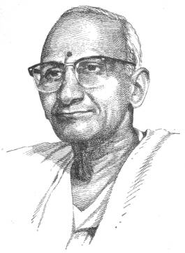

HOMAGE
TO “KAVISAMRAAT” VISWANATHA

Kavisamrat, Kalaaprapurna, Padmabhushan
Dr.
Viswanatha Satyanarayana, M.A.,
D. Litt.
Winner of the Jnan
Pith Award, 1971
10-9-1895 – 18-10-1976
A
titan has fallen. The literary world, and particularly Telugu literature,
sustained a great loss in the demise of Kavisamraat,
Kalaaprapurna, Padmabhushan Dr
Viswanatha Satyanarayana, recipient of the prestigious Jnan Pith Award. Dr
Viswanatha strode the Telugu literary scene like a colossus for over half a
century. There is no branch of literature he had not touched but he adorned. It
is no exaggeration when the literary world hailed him as the greatest poet of
Andhra, if not of India. He was a literary Tapasvin. He was a great scholar and
a thinker wedded to the Indian tradition and yet capable of interpreting it
creatively and artistically.
Readers
of Triveni need no introduction to
Dr. Viswanatha. He was a close associate of the Founder-Editor, the late Sri K.
Ramakotiswara Rau. His poems, lyrics and short stories in English translation
are appearing in Triveni right from
the inaugural number. Triveni had the
proud privilege of bringing out a Special Number on Dr. Viswanatha in 1971 when
he was honoured with the much coveted Jnan Pith Award.
Dr
Viswanatha may not be living today in the physical sense. But he will continue
to live through his books so long as the Telugu language and its people
survive.
To
the learned authors who have contributed valuable articles on the various
aspects of Dr Viswanatha’s literary eminence Triveni conveys her grateful thanks.
Triveni offers
her homage to the Kavisamraat with
folded hands. Long live Viswanatha!
–BHAVARAJU
NARASIMHA RAO
Editor